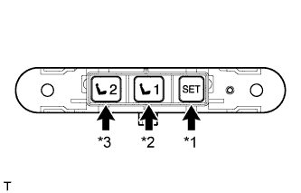

FRONT POWER SEAT CONTROL SYSTEM > OPERATION CHECK |
| CHECK FRONT POWER SEAT FUNCTION |
Check the basic functions.
| *a | Sliding Function |
| *b | Front Vertical Function |
| *c | Lifter Function |
| *d | Reclining Function |
| *e | Lumbar Support Function |
Operate the power seat switches and check to make sure each seat function operates properly:
| CHECK POWER SEAT MOTOR ASSEMBLY (SLIDING, FRONT VERTICAL, LIFTER, RECLINING) |
Check the PTC thermistor operation inside the power seat motor.
Choose a power seat function. Operate the power seat switch and move the seat as much as possible in one direction. Keep the seat in that position for approximately 60 seconds.
Operate the power seat switch again and continue to try to move the seat in the same direction as in the previous step. Measure the amount of time elapsed before current is automatically cut (the sound of the motor stops).
After current has been cut, release the power seat switch and wait for approximately 60 seconds.
Operate the same power seat switch and move the seat in the opposite direction. Check that the motor operates.
| CHECK LUMBAR SUPPORT MOTOR |
Check the PTC thermistor operation inside the lumbar support motor.
Operate the power seat switch assembly and move the lumbar support to either the foremost or rearmost position. Keep the lumbar support in that position for approximately 60 seconds.
Operate the power seat switch assembly again and continue to try to move the lumbar support in the same direction as in the previous step. Measure the time until current is cut (adjuster operation sound stops).
After current is cut, release the power seat switch assembly and wait for approximately 60 seconds.
Operate the power seat switch assembly and move the lumbar support in the opposite direction. Check that the motor operates.
| CHECK MEMORY AND SEAT RESTORING OPERATION |
|  |
Check the memory and restore operation.
| *1 | SET switch |
| *2 | M1 switch |
| *3 | M2 switch |
Turn the engine switch on (IG) and move the shift lever to P.
Move the seat to the foremost and uppermost position via the seat switch.
Check that the buzzer sounds for 0.5 seconds and the seat position is memorized when the M1 switch of the memory switch and the SET switch are pressed and held, or the SET switch is pressed and then the M1 switch is pressed within 3 seconds.
Move the seat out of the foremost and uppermost position via the seat switch.
Check that the buzzer sounds for 0.5 seconds and the seat position is memorized when the M2 switch of the memory switch and the SET switch are pressed and held, or the SET switch is pressed and then the M2 switch is pressed within 3 seconds.
Check that the buzzer sounds for 0.1 seconds and the seat automatically moves into the foremost and uppermost position (memorized position) when the M1 switch of the memory switch is pressed.
Check that the buzzer sounds for 0.1 seconds and the seat automatically moves out of the foremost and uppermost position (memorized position) when the M2 switch of the memory switch is pressed.
Clear the memory.
Turn the engine switch on (IG).
Press the front power seat switch (front vertical switch) downward 3 times.
Within 10 seconds of the above operation, begin the following operation: perform the rearward reclining operation and upward lifter operation simultaneously for 10 seconds or more (a buzzer sounds for 0.5 seconds). This clears the memory.
| CHECK MEMORY CALL FUNCTION |
Memory call function check.
With the recognition code of the transmitter registered in memory, perform an entry unlock or wireless unlock operation. Open the driver door and check that the front seat, steering wheel and outer mirror automatically move to the positions recorded in memory.
Memory registration.
Prepare by recording the driving position through the memory switch (M1 or M2).
With the engine switch on (IG), press and hold both of the following: a memory switch (M1 or M2) and manual door control switch LOCK or UNLOCK. Continue holding the switches until the answer-back buzzer sounds.
Memory erasure.
With the engine switch on (IG), press and hold both of the following: the memory SET switch and manual door control switch LOCK or UNLOCK. Continue holding the switches until the answer-back buzzer sounds.
| CHECK MEMORY CALL EMERGENCY STOP FUNCTION |
During a memory call operation, perform one of the following operations and check that the memory call operation stops.
| CHECK POWER SEAT POWER EASY ACCESS SYSTEM |
Away function
Turn the engine switch off and move the shift lever to P.
Disengage the seat belt tongue plate from the buckle.
Check that the seat slides rearward.
Return function
Turn the engine switch on (ACC) or on (IG) or move the shift lever to P, and then engage the seat belt tongue plate with the buckle.
Check that the seat slides forward.